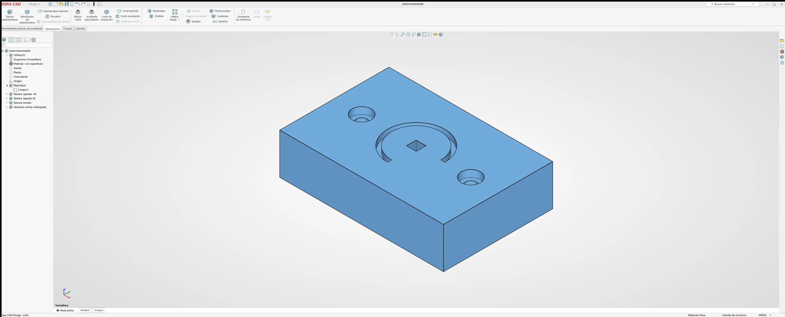
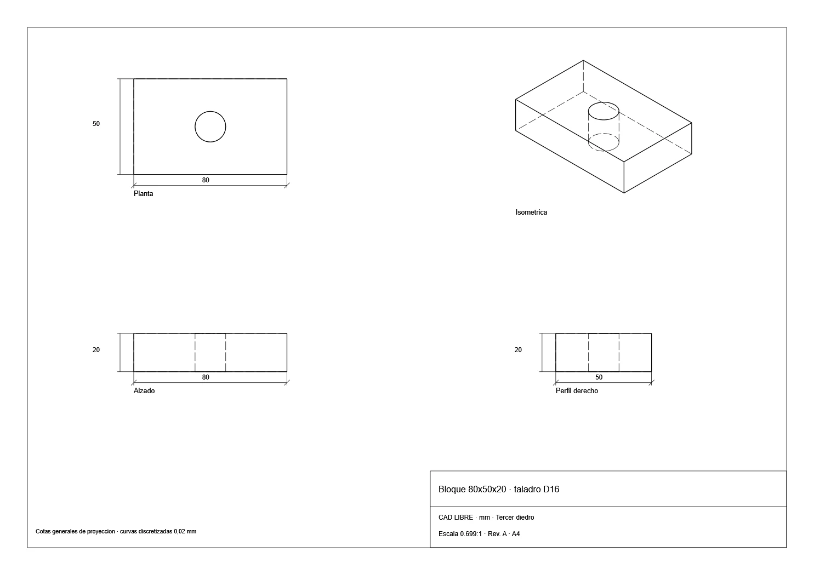
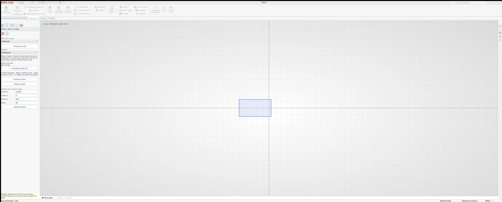
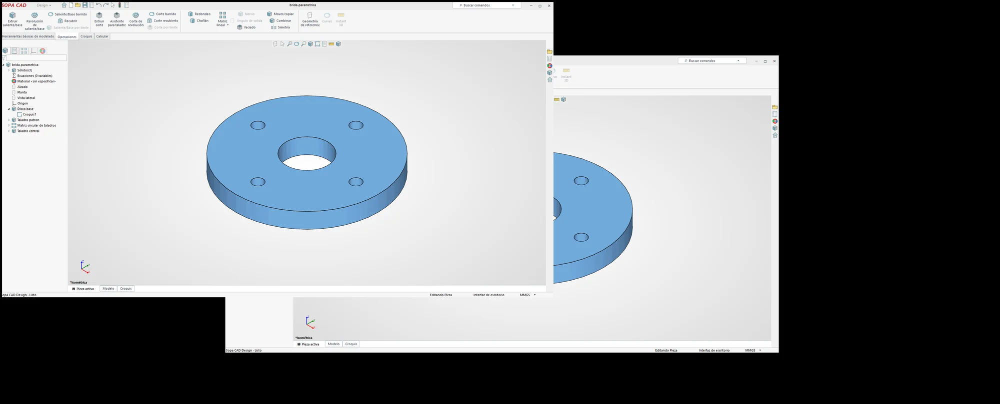
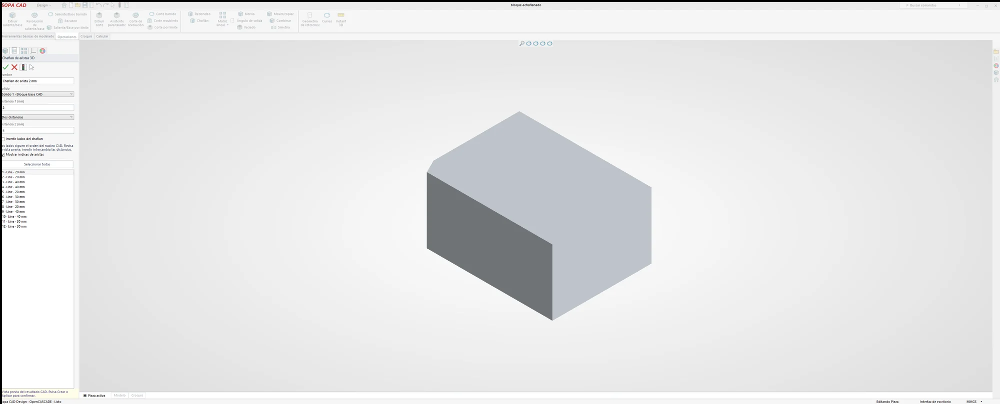
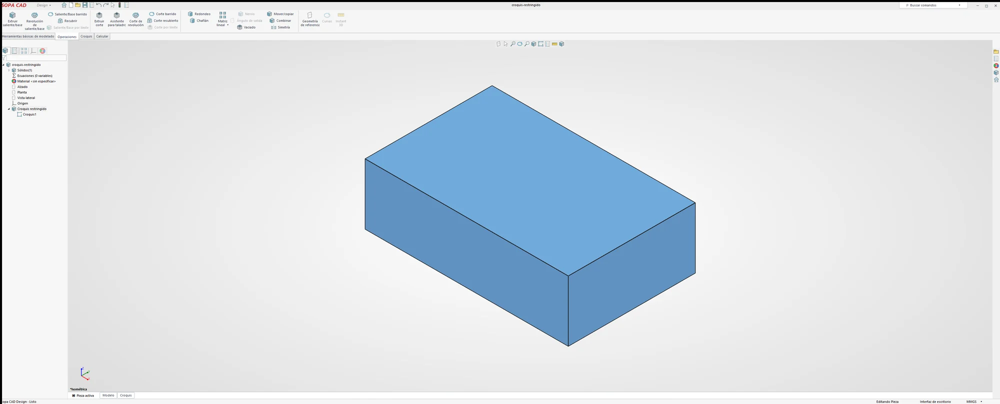
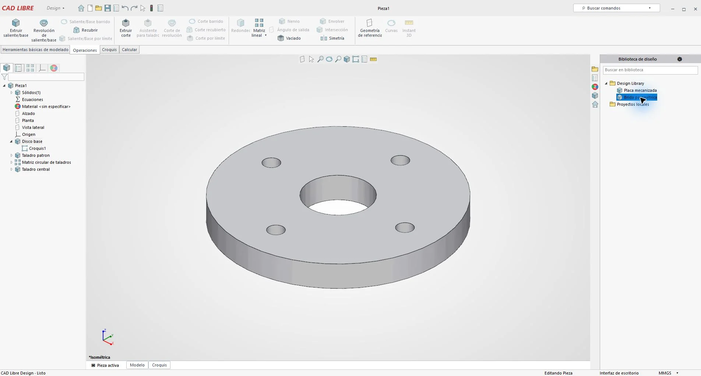

Croquis que aguantan un cambio
El croquis lleva restricciones. Si mueves una cota o un parámetro, la geometría se reconstruye desde el historial, no a mano.
// Versión 0.42 · Windows · MIT
Sopa CAD es un CAD paramétrico propio para Windows, nativo y libre (MIT). Dibuja croquis con restricciones y conviértelos en sólidos con historial, ecuaciones y planos acotados.
El programa está en un repositorio privado. Esta página no lo descarga. Antes se llamó CAD Libre.

01 · Qué es
La interfaz es nativa (WPF), escrita en C#. El sólido de contorno (B-rep) lo resuelve FreeCAD 1.1.4 en versión portable, con Open CASCADE. Esos dos no van dentro del ZIP de Sopa CAD.
El croquis lleva restricciones. Si mueves una cota o un parámetro, la geometría se reconstruye desde el historial, no a mano.
Extrusión, revolución, barrido, recubrimiento y vaciado. Combinar sólidos, repetirlos en matriz y reflejarlos por simetría.
Del sólido sale un plano acotado. Se guarda en .cldrawing y puede exportarse a SVG, DXF o PNG.
La cinta agrupa croquis y operaciones en una barra superior, con una disposición parecida a la de otros CAD de escritorio. Los iconos son propios. Sopa CAD no es SolidWorks y esta página no promete la misma cobertura.
02 · Funciones
Lista de la versión actual. Lo que depende de FreeCAD queda dicho al lado, para no contarlo como si viniera en el ZIP.
.clcad. Plano en .cldrawing.En la vista previa de cuando la ventana se llamaba CAD Libre, la cinta enseña además corte de extrusión, corte de revolución, corte barrido, nervio, envolver, redondeo, chaflán, ángulo de salida y geometría de referencia. El chaflán se ve también en la 0.42, en el documento «bloque achaflanado». Esta página no marca como comprobado cada botón de esa cinta.
03 · Galería
Fotos de Sopa CAD 0.42 en el equipo de Miguel. El plano es la lámina exportada. Las cotas que se leen están en esa hoja; el resto de capturas no trae medidas, y esta página no las añade.


El editor, con la cuadrícula, los ejes y un rectángulo. A la izquierda, el panel de restricciones.

Dos ventanas del mismo disco, en azul: agujero central y cuatro taladros. El árbol nombra la brida.

La ventana «bloque achaflanado»: un prisma con una arista cortada. El panel lista aristas.

La ventana «croquis restringido» muestra el prisma resultante, con la cinta y el árbol.
04 · Evolución
El programa ha pasado de la versión 0.2 a la 0.42. No hay aquí un diario con la fecha de cada salto: solo lo que se reconoce en las imágenes, de cuando la ventana se llamaba CAD Libre a la 0.42 con el nombre Sopa CAD.
La vista previa muestra una brida en gris, la biblioteca de diseño a la derecha (placa mecanizada y brida) y la cinta en español. El árbol incluye ecuaciones, material sin especificar, las vistas alzado, planta y lateral, el origen, y las operaciones de la brida. Esta página no asigna esa captura a un número de versión concreto.

El plano del bloque 80×50×20 con taladro D16 lleva en el cajetín «CAD LIBRE · mm · Tercer diedro», escala 0,699:1, revisión A, formato A4. Las vistas son planta, alzado, perfil derecho e isométrica. Abajo avisa: cotas generales de proyección, curvas discretizadas a 0,02 mm.
La ventana ya se llama Sopa CAD. En esa versión se ven el árbol, el croquis sobre la cuadrícula, sólidos en azul (la pieza mecanizada, la brida y el prisma del croquis restringido) y el bloque con chaflán. El repositorio del programa sigue siendo privado.
05 · Formatos
.clcadArchivo de la pieza en Sopa CAD..cldrawingArchivo del plano, con sus vistas y cotas.SVG DXFExportación del plano o del dibujo.PNGExportación a imagen.STEPIntercambio del sólido. Hace falta FreeCAD 1.1.4 portable y Open CASCADE, fuera del ZIP.STL OBJLa misma vía: el B-rep no va incluido en el ZIP de Sopa CAD.En el plano del bloque, la propia lámina avisa de que las curvas de la proyección van discretizadas a 0,02 mm. Es un límite de esa salida, no un redondeo de esta página.
06 · Cómo probarlo
Sopa CAD 0.42 se prueba desde el repositorio privado del programa. Aquí no hay instalador, ni tamaño de archivo, ni suma de comprobación, porque el ZIP no se publica en esta página.
El código y el ZIP están en github.com/ardu01/sopa-cad. Es privado. Sin acceso, GitHub responde que no existe. No hay otra descarga.
Es una aplicación de Windows, nativa, con interfaz WPF escrita en C#. Esta página no describe una versión para otros sistemas porque no la hay.
Para el sólido B-rep y para exportar STEP, STL y OBJ hace falta FreeCAD 1.1.4 en versión portable. Open CASCADE va con FreeCAD. Ninguno de los dos está dentro del ZIP.
07 · Licencia
Sopa CAD es software libre con licencia MIT. Puedes usarlo, estudiarlo, modificarlo y compartirlo en los términos de esa licencia. El copyright del programa es de Miguel Rodríguez Saiz.
Sopa CAD no es FreeCAD. FreeCAD y Open CASCADE Technology son programas distintos, con su propia licencia. La cinta no usa iconos de SolidWorks ni de otro CAD propietario.